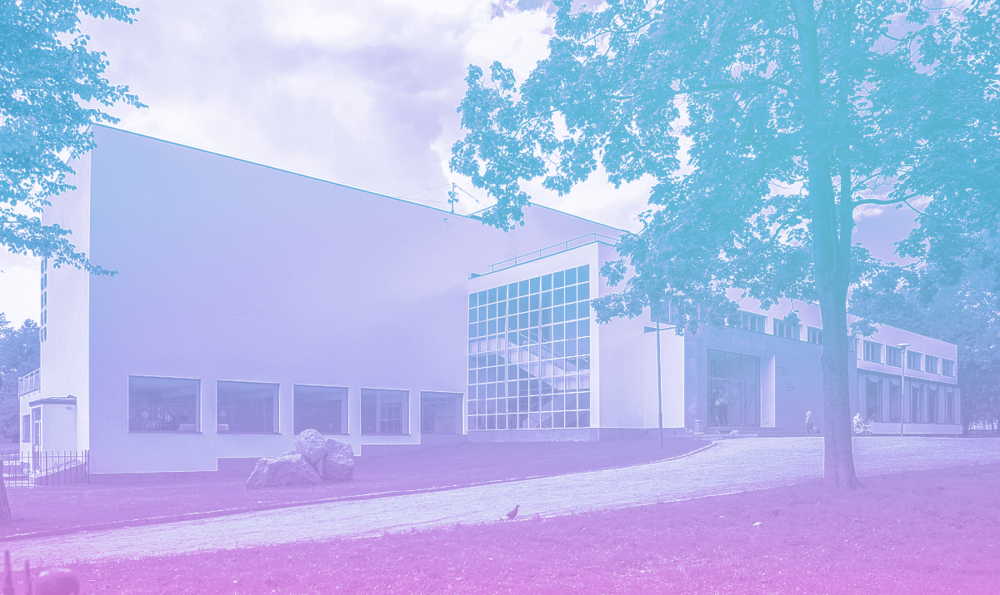

Библиотека Алвара Аалтоа — центральная городская библиотека Выборга
Центральная городская библиотека Выборга, построенная в 1933—1935 годах по проекту финского архитектора Алвара Аалто. Современный адрес: Суворовский проспект, 4.
Архитектура
Здание считается вехой в творчестве архитектора, ибо обозначает переход Аалто от национально окрашенного неоклассицизма к упрощённым формам регионального модернизма. Именно здесь впервые проявилась уникальная черта его архитектурного стиля — сочетание строгости функционализма и нежной плавности природных линий. Начиная с Выборгской библиотеки творческая манера Аалто тяготеет к использованию естественных материалов и, в особенности, дерева. Сенсацию в архитектурном мире вызвал волнообразный акустический потолок лекционного зала, обрушившийся в послевоенные годы, когда здание библиотеки пустовало. В настоящее время потолок восстановлен по оригинальным чертежам. В потолке читального зала устроены круглые окна, через которые поступает солнечный свет, при этом стены зала окон не содержат.
История библиотеки
Строительство библиотеки началось в 1927 году на средства, которые завещала вдова выборгского мецената Юхо Лаллукка, состоятельная горожанка Мария Лаллукка. 13 октября 1935 года произошло торжественное её открытие. Вскоре библиотека стала известна во всём мире как эталон библиотечного здания.
Здесь Алвар Аалто смог учесть все особенности важные для этой сферы деятельности: режимы хранения книг, особенности работы библиотекарей, и, конечно, потребности читателей. Уникален волнообразный потолок читального зала, который является отличительной особенностью архитектурного стиля Алвара Аалто. Самостоятельно разработанная им система бестеневого освещения библиотеки, с помощью воронкообразных светильников.
Библиотека просуществовала в своём первозданном виде до 1939 года. Между Советским Союзом и Финляндией началась война, и в 1940 году Выборг заняли советские войска. В те годы библиотека была укомплектована шведской, финской, немецкой литературой, но после войны оказалась пустой и поменяла свой статус, став филиалом Государственной публичной библиотеки им. Салтыкова-Щедрина. Её собрания пополнились книгами на русском языке, которые до сих пор сохранились в фондах. В 1944 году Выборг снова вошёл в состав Советского Союза. В условиях послевоенной разрухи библиотека на долгое время оказалась заброшенной. Для того, чтобы местные жители смогли вновь пользоваться услугами библиотеки, требовалась её реконструкция, деньги на которую появились лишь в 1954 году, в библиотеке были проведены восстановительные работы. Но отсутствие у реставраторов оригинальных чертежей и необходимых материалов не позволило восстановить это здание в его исходном виде.